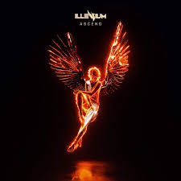
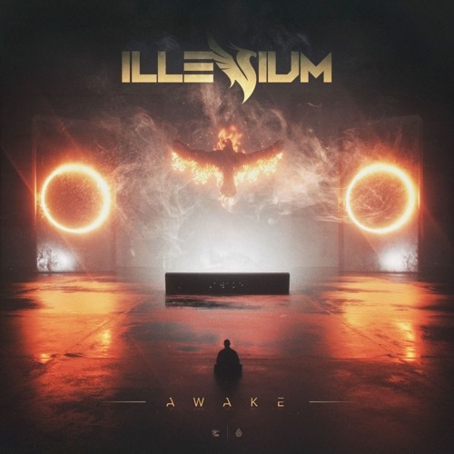

Name: Nicholas D. Miller Alias: Illenium Age: 29 Genre: EDM
Popular Hits
Illenium, The Chainsmokers - Takeaway
Illenium - Good Things Fall Apart
Illenium, Gryffin - Feel Good
Personal Favorites
Illenium - Nightlight (2020)

Illenium, X Ambassadors - In Your Arms (2019)

Illenium, RUNN - Free Fall (2017)
About
Nicholas D. Miller, known professionally as Illenium (born December 26, 1990), is an American musician, DJ, and record producer. He has released three studio albums with his most recent, Ascend, being released in August 2019 on Astralwerks. The album was Illenium's first to top the Billboard Dance/Electronic Albums chart and also reached his highest peak on the Billboard 200 at number 14.
Several of Illenium's songs have appeared on the Billboard Hot Dance/Electronic Songs chart, including two singles in 2019 that peaked at number 3: "Good Things Fall Apart" with Jon Bellion and "Takeaway" with The Chainsmokers (featuring Lennon Stella). Illenium has also worked on numerous notable remixes, including those for The Chainsmokers' "Don't Let Me Down" and Flume's "Say It", the latter of which won the award for "Remix of the Year" at the inaugural Electronic Music Awards in 2017. He was included in the Forbes 30 Under 30 2020 Music list.